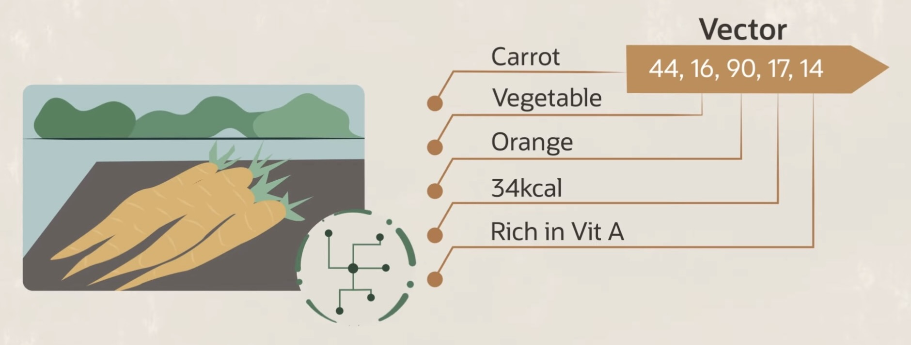
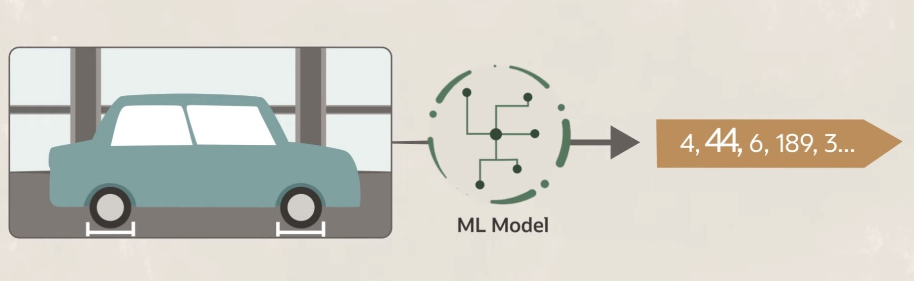
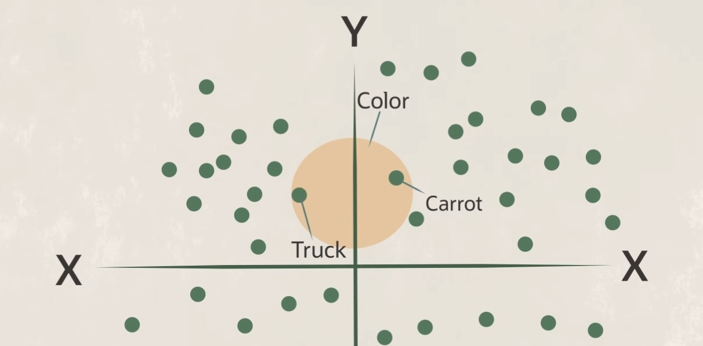
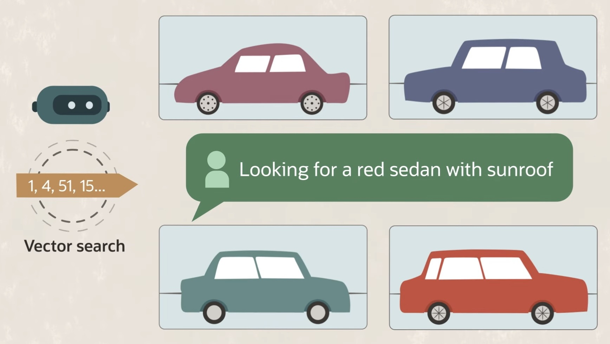

Week 11: Vector Databases
DSAN 6000: Big Data and Cloud Computing
Fall 2025
Class Sessions
Now We Put These Embeddings (Vectors) into Databases
- The goal: identify similar object as vectors “close to” the location (in vector space) of a given query
Vector Search Workflow

Unstructured Data \(\leadsto\) Structured Geometric Query Space


More Data \(\leadsto\) “Increasing Returns”



Queries Embedded via the Same Model!

Lab Time!
- Lab 11 on Canvas
- Lab 11 on GitHub Classroom
References
Firth, John Rupert. 1957. Papers in Linguistics, 1934-1951. Oxford University Press.
Saussure, Ferdinand de. 1916. Course in General Linguistics. Open Court.